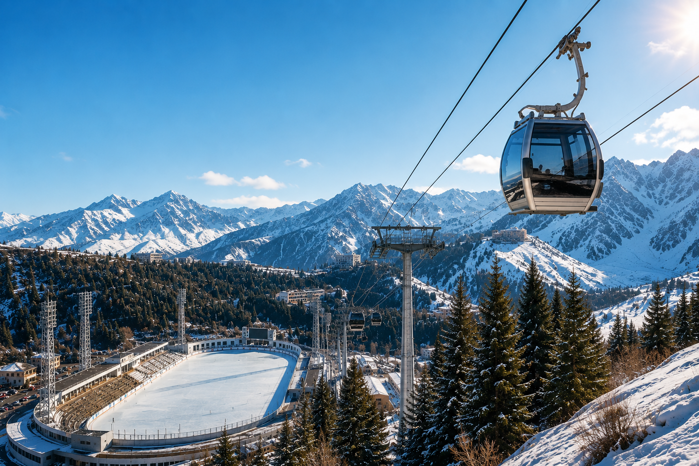
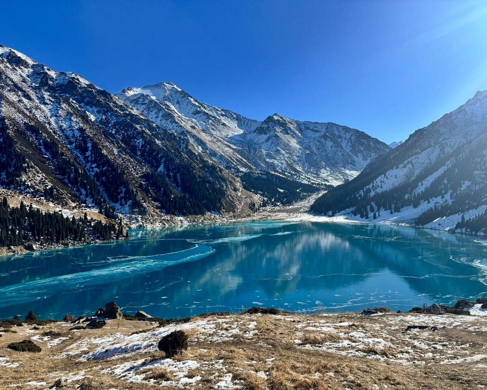
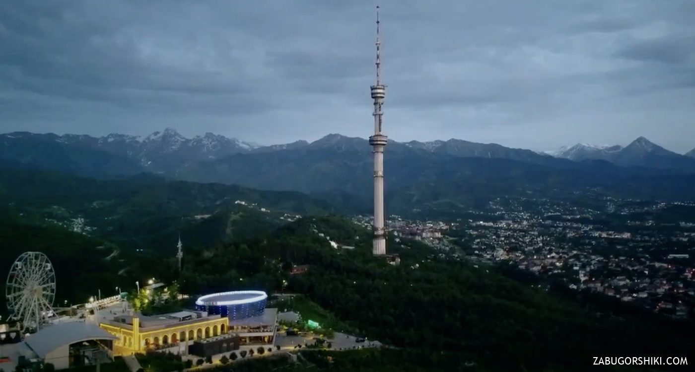

Shymbulak & Medeu
World-famous high-altitude ice rink Medeu and the modern Shymbulak mountain resort located in the scenic Medeu Valley.
Explore ResortExploring the apple city: from high-mountain ice rinks to scenic canyons and historic architecture.

World-famous high-altitude ice rink Medeu and the modern Shymbulak mountain resort located in the scenic Medeu Valley.
Explore Resort
A natural alpine reservoir located 2,511 meters above sea level in the Trans-Ili Alatau mountains with turquoise water.
View Route
The highest point of Almaty city with a famous TV tower, panoramic cable car ride, parks, and city viewing platforms.
Get Tickets